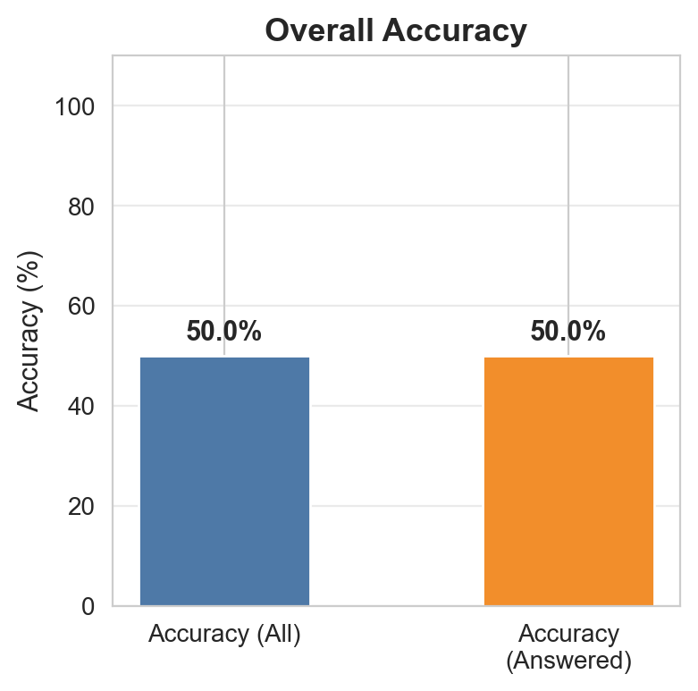
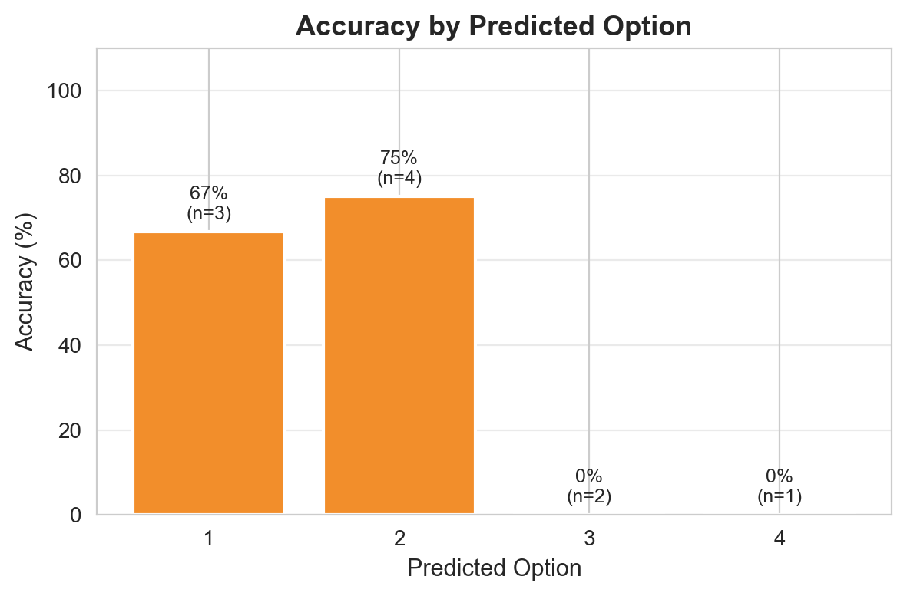
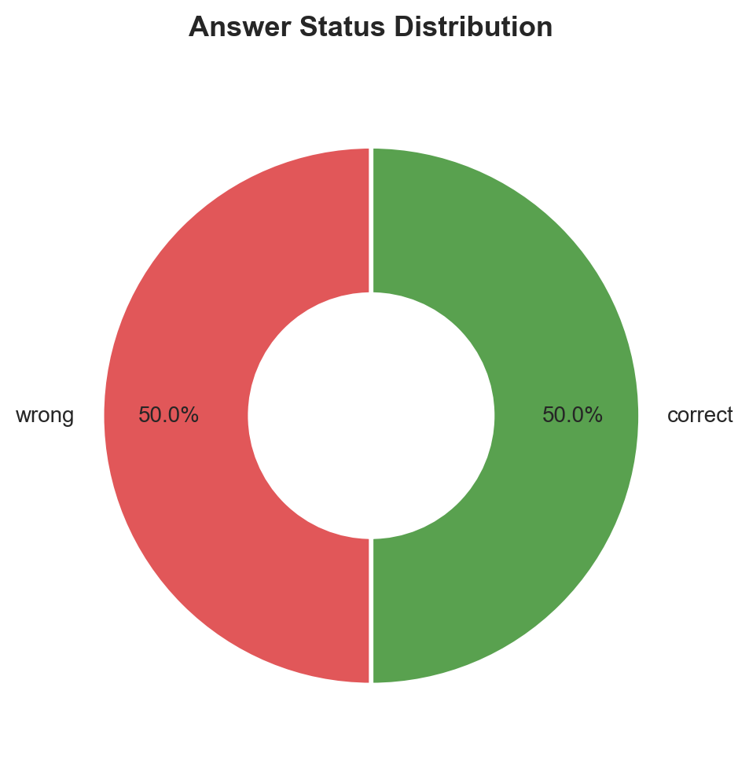
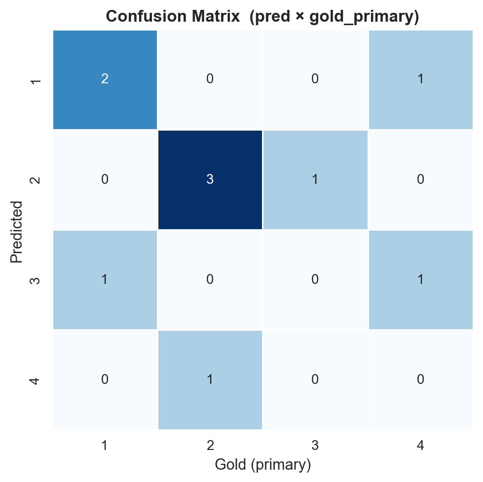
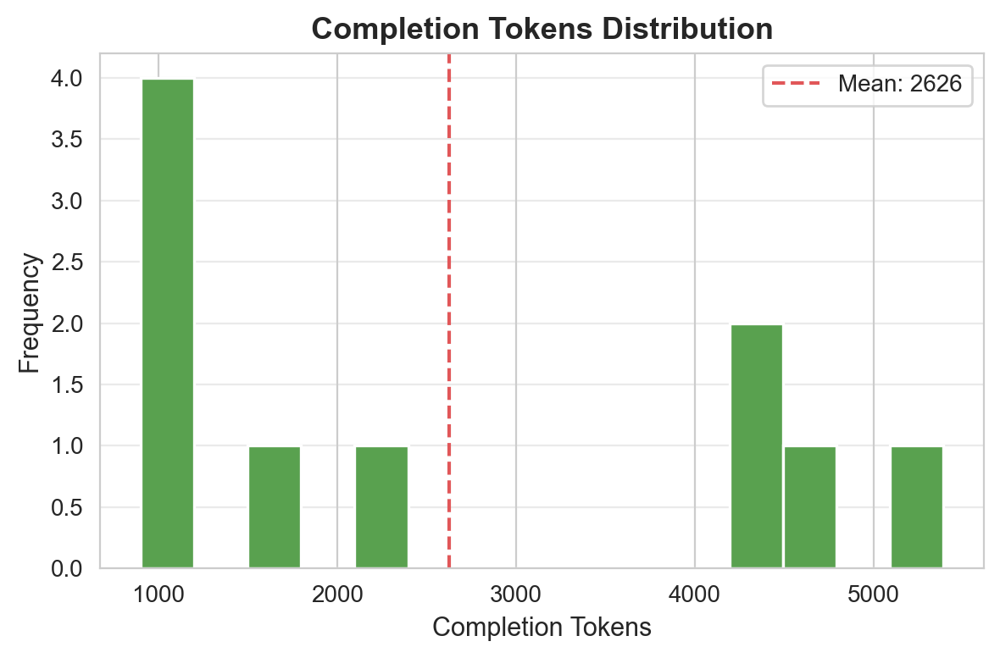
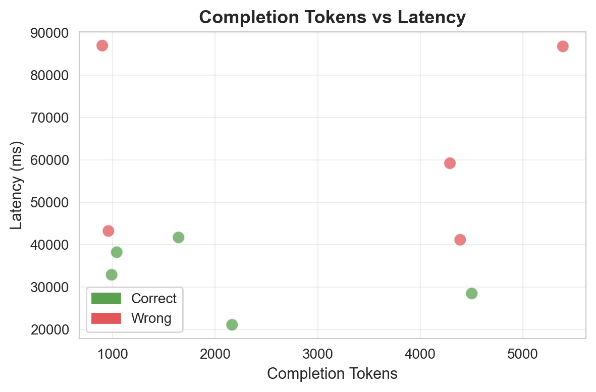
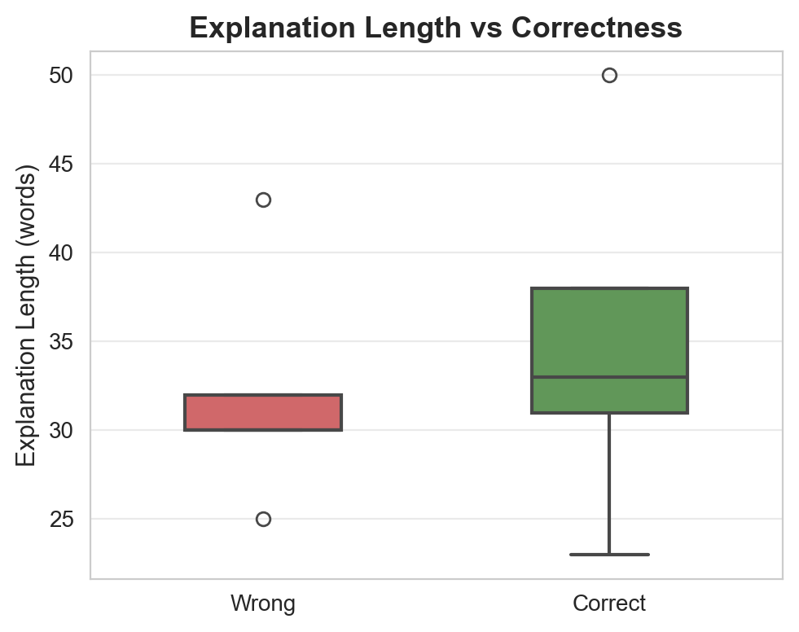
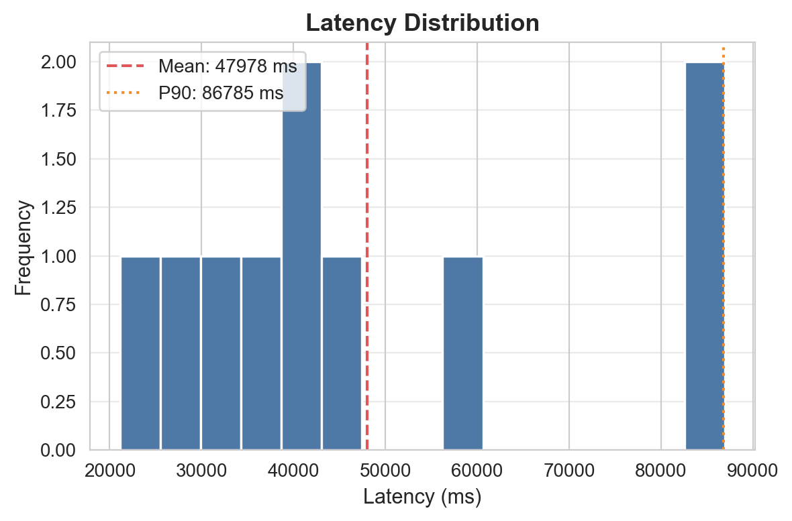
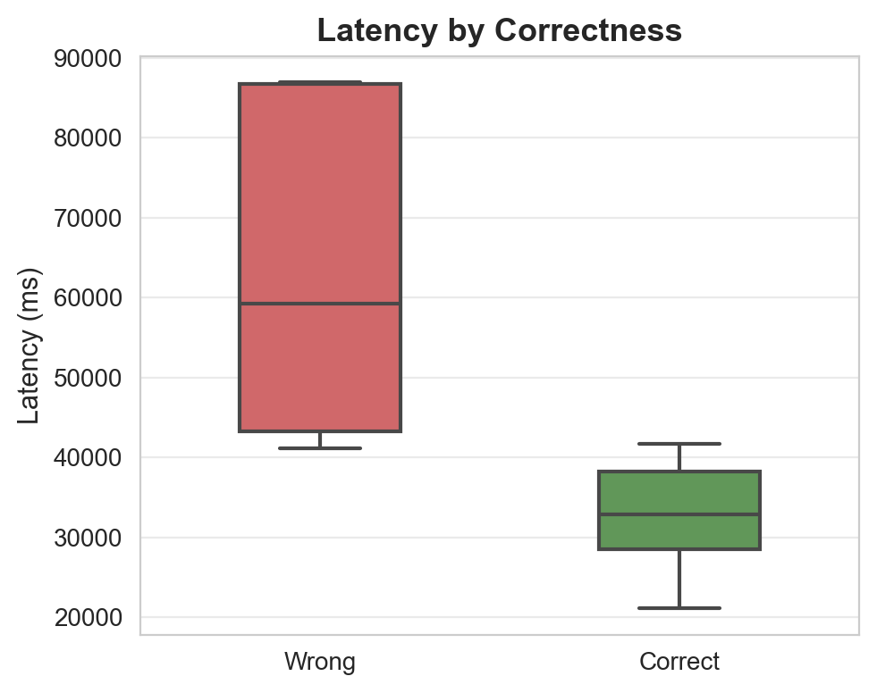

سوالات: 10 | پاسخدادهشده: 10 | بیپاسخ/خطا: 0

دقت کلی مدل

دقت به تفکیک گزینه

توزیع وضعیت پاسخها

ماتریس درهمریختگی

توزیع توکنهای خروجی

توکن vs تأخیر

طول توضیح vs صحت

توزیع تأخیر

تأخیر به تفکیک صحت
| ID | پاسخ مدل | پاسخ صحیح | نتیجه | تأخیر (ms) | توکن | خلاصه استدلال |
|---|---|---|---|---|---|---|
| 1 | 2 | 3 | ❌ | 59210 | 4290 | با فسخ بیع، دین ثمن منحل میشود و حواله (ماده ۷۲۵ و ۷۳۵ قانون مدنی) که مبتنی بر آن بود منفسخ میگردد؛ در نتیجه ذمه «ب» بری و دین اصلی «الف» به «ج» احی... |
| 2 | 1 | 1 | ✅ | 38232 | 1039 | دلیل لبّی فاقد اطلاق لفظی است و طبق قاعده اصولی فقط به قدر متیقن آن اخذ میشود؛ اصول لفظی در آن جاری نیست و عرف و عادت از مصادیق آن هستند... |
| 3 | 4 | 2 | ❌ | 41159 | 4390 | مطابق ماده ۴ قانون تشدید مجازات اسیدپاشی مصوب ۱۳۹۸، آزادی مشروط، تخفیف مجازات و تعلیق اجرای مجازات به طور مطلق ممنوع شدهاند اما تعویق صدور حکم ذکر نش... |
| 4 | 3 | 1 | ❌ | 86767 | 5392 | گزینه ۳ نادرست است؛ زیرا ماده ۵ قانون جرم سیاسی امکان تخفیف مجازات را پیشبینی کرده که نشاندهنده تأثیر سیاسی بودن جرم بر میزان مجازات است، برخلاف ادع... |
| 5 | 1 | 4 | ❌ | 43240 | 958 | به موجب مواد ۲۵۳ و ۲۶۳ قانون مدنی، ولی و وصی میتوانند با رعایت مصلحت و اجازه دادگاه بدهکاران مولیعلیه را ابراء کنند؛ ادعای مطلق نبود صلاحیت خلاف قان... |
| 6 | 2 | 2 | ✅ | 41712 | 1642 | به موجب ماده ۱۰۷ قانون آیین دادرسی مدنی، استرداد دعوا قبل از ورود خوانده به ماهیت (اجرای تحقیق محلی) بدون رضایت پذیرفته و قرار رد دعوای قطعی صادر میش... |
| 7 | 2 | 2 | ✅ | 28501 | 4503 | نامه خوانده حاوی انکار ادعا و درخواست تغییر وقت دادرسی به عنوان لایحه دفاعیه تلقی میشود؛ لذا حکم حضوری و قابل تجدیدنظر است.... |
| 8 | 1 | 1 | ✅ | 32900 | 989 | به موجب ماده ۲۰۴ لایحه اصلاحی قانون تجارت ۱۳۴۷، تصمیم به انحلال و اسامی مدیران تصفیه باید ظرف پنج روز به مرجع ثبت شرکتها اعلام شود؛ سایر گزینهها با ... |
| 9 | 3 | 4 | ❌ | 86945 | 898 | به موجب اصل 141 قانون اساسی، کارمندان دولت حق تأسیس شرکت خصوصی ندارند و عضویت در هیئت مؤسس مصداق تأسیس شرکت است و ممنوع میباشد... |
| 10 | 2 | 2 | ✅ | 21117 | 2164 | بر اساس اصل ۱۶۷ قانون اساسی، قاضی موظف به استناد به قوانین مدوّن است؛ اما ذکر نظریه فقهی همجهت با قانون، تخلف محسوب نمیشود و رأی قابل نقض نیست زیرا ... |